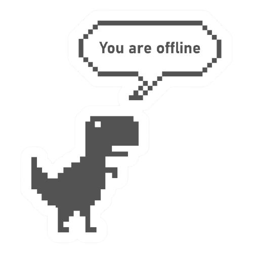

<ion-header>
  <ion-toolbar mode="ios" color="warning">
    <ion-buttons slot="start" class="ion-margin-start">
      <ion-icon name="wifi" slot="icon-only" color="dark"></ion-icon>
    </ion-buttons>
    <ion-title color="dark">Sin Internet</ion-title>
    <ion-buttons slot="end" class="ion-margin-end">
      <ion-icon name="wifi" slot="icon-only" color="dark"></ion-icon>
    </ion-buttons>
  </ion-toolbar>
</ion-header>

<ion-content>
  <ion-card>
    
    <ion-card-header>
      <ion-card-subtitle>Revisa tu conexión</ion-card-subtitle>
      <ion-card-title>Sin Internet</ion-card-title>
    </ion-card-header>

    <ion-card-content>
      <p> Para poder usar bien la app necesitamos que tengas conexión activa a Internet. </p>
    </ion-card-content>
  </ion-card>
</ion-content>